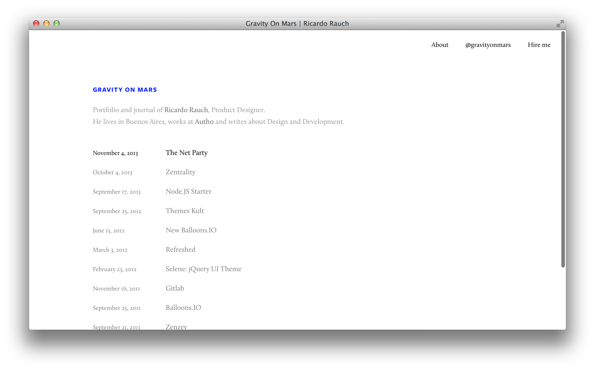
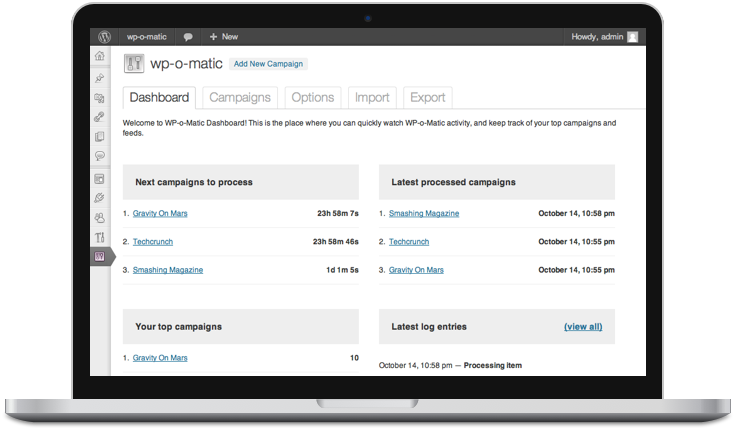
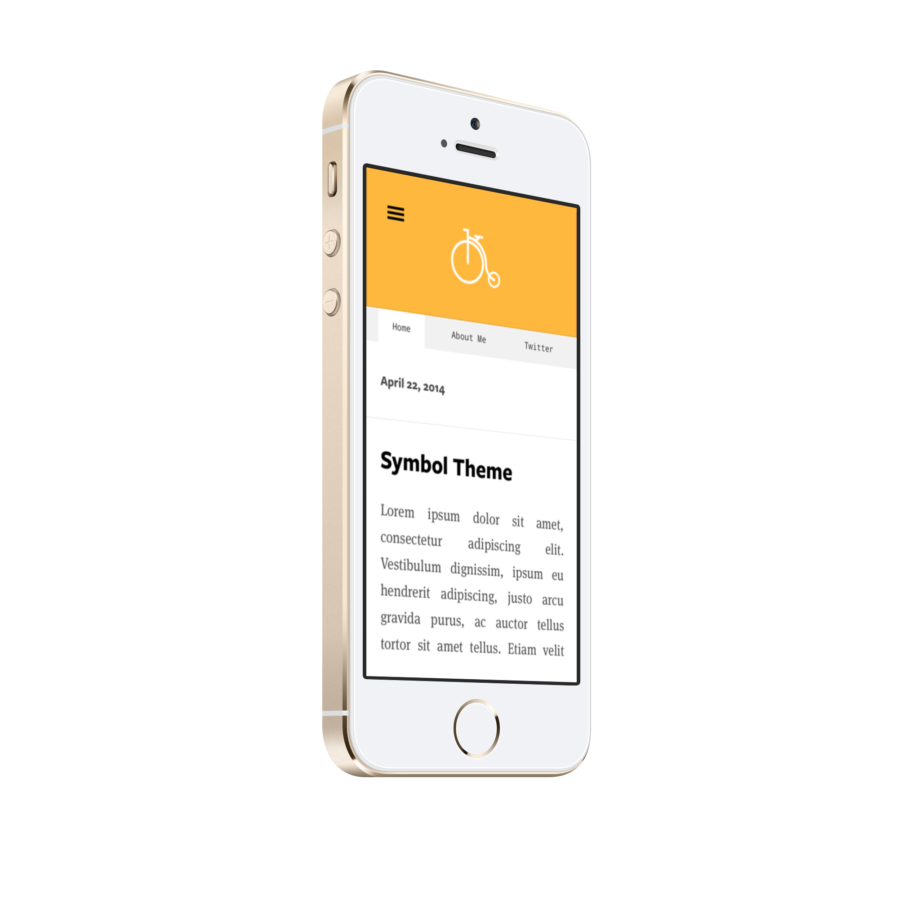

Themes Kult
This project was conceived with the goal of bringing simplicity and elegance to Wordpress.
I create designs that prioritize clarity in reading, simplicity in access to content, and customizability.



Statement: I don't give free support anymore.